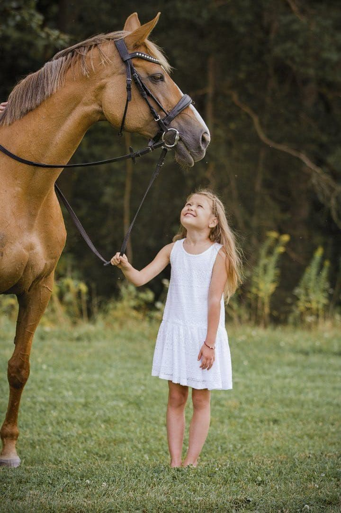
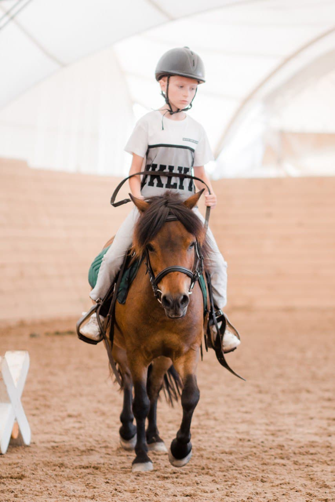

Для детей
На конном ранчо всегда рады маленьким гостям! Почти все дети любят лошадей! Поэтому обязательно стоит провести с ними день у нас на Green ranch!
- общение с лошадьми дарит незабываемые эмоции
- поездка на конное ранчо- это замечательная возможность провести время всей семьей на природе, вырваться из города и побыть на свежем воздухе
- дети узнают много нового и интересного
- даже спокойная шаговая прогулка верхом - легкая физическая нагрузка, а это так важно для школьников, которые проводят много времени за партами. Подробнее о прогулкахздесь .
- на ранчо дети могут не только покататься верхом, но и сами могут поучаствовать в подготовке лошади, узнают, как правильно седлать лошадь и ухаживать за ней. Подробнее об этой услуге можно узнать в разделе мастер-классы

- если вы хотите оригинально отметить семейные праздники-у нас есть все условия, чтобы ребенку понравился его День рождения! А чтобы запечатлеть яркие моменты истории вашей семьи стоит провести фотосессию с лошадьми! Подробнее здесь …
-
Если ваш ребёнок хочет не просто прокатиться на лошади,
а решил научиться самостоятельно ездить верхом - лучшего конного клуба для обучения детей просто не найти!
- Для самых маленьких всадников у нас есть пони-клуб. Начинать тренировки можно с 5 лет! Занятия проходят индивидуально ( 25 р -30 мин).
- С 8-10 лет уже можно начинать ездить на лошади. У нас есть специально подготовленные детские лошадки, невысокие и спокойные, с удобными аллюрами. Сначала занятия проходят индивидуально (35р -45 мин), далее можно заниматься в смене ( в том числе и по абонементу). Подробнее о видах тренировок можно узнатьздесь .

Почему стоит водить ребёнка на занятия верховой ездой?
- Езда на лошади полезна для здоровья- вырабатывает привычку держать осанку, укрепляет мышцы, развивает равновесие, большую часть года тренировки проходят на свежем воздухе
- Это не просто занятия спортом- это и настоящее хобби, увлечение, которое приносит радость и без труда отвлекает детей от гаджетов. В конном клубе каждый маленький «конник» сможет найти себе друзей, ведь здесь всех объединяет любовь к лошадям!
- Общение с лошадьми помогает воспитывать в детях такие необходимые в жизни навыки, как ответственность, умение работать в команде, терпение и прилежность. Ведь лошадь - это не просто спортивный снаряд, это партнёр, к которому нужно найти подход и прислушиваться.
Даже, если ваш ребёнок не будет в дальнейшем серьезно заниматься конным спортом- уроки верховой езды отличный вклад в его развитие!